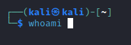
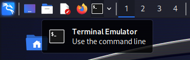
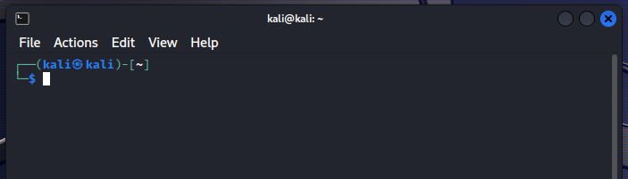
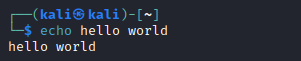
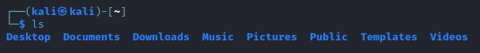
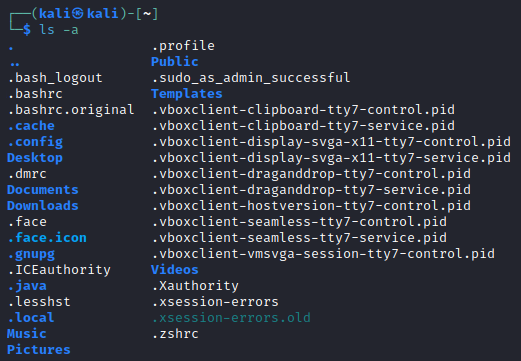
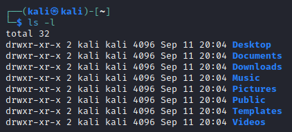
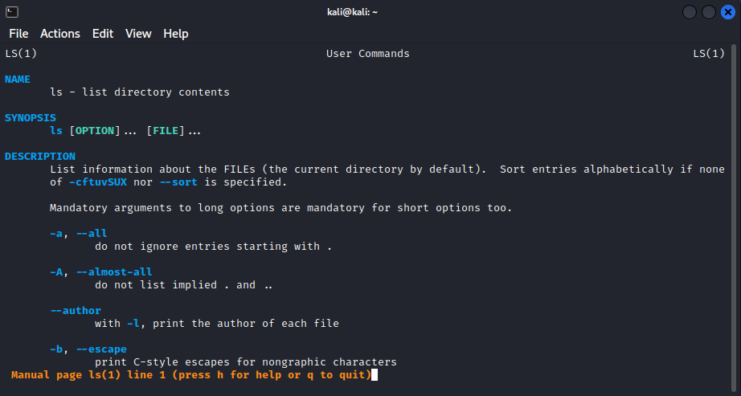

Linux Basics
Now that you have a Linux virtual machine set up, let's get cooking on the command-line.

Haven't set up a virtual machine yet? Click me!
Why?
Linux is used everywhere in the field of cybersecurity. Why? Because it's useful. Its usefulness has led to a thriving ecosystem of people and software. This is why so many of the tools we will use have been developed for Linux, and why we continue to use it.
Overview
This post will cover different aspects of Linux, including commands, users, and the filesystem. At the end of the post, there will be a couple of cheat sheets for common commands and filesystem directories.
Commands
Arguably, the most essential part of Linux is the commands. Commands allow for quick and extensible usage of programs installed on the system.
There are commands for listing files, making web requests, editing users, shutting down the system, and so on. You can do everything in Linux with commands as long as you have the correct commands installed and permissions to do so.
Hello World
First, open a terminal in your virtual machine. In Kali, you can do this by clicking the Terminal icon at the top-left of the desktop.
 
We will start by looking at the echo command. This command echoes the provided text back to the output. For example, echo hello world will print hello world.

There are two parts to this command:
echo: The command itself.hello world: The arguments/parameters passed to the command. In this case, the parameter is simply the text we want the console to print.
What are the parameters? They're important as they allow us to tune the functions of a command. We will look more into the parameters soon.
Input, Output, and Piping
With the echo command, whatever input we provide (as a parameter) gets written to the output. What exactly is happening here, though? We are providing a parameter, and the echo command is writing that text to the output stream, also known as stdout (standard output).
Streams are channels that data is written to and read from. There are three standard streams in Linux: - standard input (stdin) - standard output (stdout) - standard error (stderr)
There are also streams for reading from and writing to files.
We can pipe the echo command's output (stdout) to a file using the > operator. echo hello world > my_file would write the text "hello world" to the my_file file.
Piping using the | operator comes in handy when you wish to combine commands. For example, you have a command my_command that results in a huge output. You can search this command's output using the grep command. Running the full command as my_command | grep pattern, you are running my_command, piping its output to grep's input, and then grep only prints lines with pattern.
There are more advanced ways in which you can use the piping operators (|, >, <) to combine the functions of commands. However, this section is just a simple introduction to help you when you encounter these in the wild.
More Parameters
Parameters allow us to tune what a command does. For example, the ls command lists the files and directories within the current directory.
Another important command is ls, which lists files and sub-directories in the current directory.

One parameter available for the ls command is -a. The -a parameter prints hidden files, which are files in Linux that start with a . character.

Another parameter for the ls command is -l, which prints one entry per line. The -l parameter also outputs the file permissions, file size, and last write date for each file.

Commands usually allow multiple parameters, and we can combine the -l and -a parameters in this case: ls -l -a. When parameters start with a dash (-), you can often combine the parameters into one: ls -la (this is not always the case).
How can we find these parameters and unlock the functionality of commands? There are two ways usually:
- man <command>: The man command allows us to view the manual for a given command. man ls will provide us with a complete overview of the ls command.
- <command> --help or <command> -h: Running a command with the --help/-h argument often displays a brief help text.
The man command is a vital and beneficial tool so we will look more into it.
More Commands
A cheatsheet for the different commands is provided below.
man
The man command displays the reference manual for a given command. For example, man ls will show you the manual for the ls command.
When the manual opens up, you will notice you can no longer run commands. Your keyboard is now tied to the controls of the manual. This is common among some commands and allows for greater interactivity. Another command that does this is nano, which is a text editor we will look at later.
There are several useful controls you can do:
- Using the arrow keys, you can now scroll through the manual.
- Pressing q will exit the manual.
- Pressing h will show the help page for controls.
- Pressing /<pattern> will search for a specific pattern. For example, if you want to read more about the -l parameter, you can type /-l + Enter. Instead of typing the whole pattern again, type / + Enter to search for the next occurrence.
Note: These are the same controls as used with the less command.

sudo
The sudo command allows you to execute commands as different users. The most common usage is to run commands as the root user. When you use the sudo command, the terminal will prompt you for your password before having your privileges elevated.
Examples:
sudo whoami: This command will outputrootafter entering your password.sudo apt update: This command will runapt updateas therootuser.
ls
The ls command lists files and directories in the specified directory. If no directory is specified, it will use the current directory. As mentioned earlier, there are many useful options available:
- -a: Show hidden files and directories (files/directories starting with .).
- -l: Show in list format, including file permissions, date modified, and file size in output.
- -R: List files and directories recursively (lists everything in the specified directory, and its child directories... so on).
Examples:
- ls: List files and directories in the current directory.
- ls /: List files and directories in the root (/) directory.
- ls -la /: List files and directories (including hidden) in the root (/) directory in list format.
cd
The cd command changes your current directory.
Examples:
| Command | Old Current Directory | New Current Directory | Description |
|---|---|---|---|
cd my_dir |
/home/kali |
/home/kali/my_dir |
Change your current directory to the relative directory of my_dir. |
cd ./my_dir |
/home/kali |
/home/kali/my_dir |
Same as above. |
cd /tmp |
/home/kali |
/tmp |
Change your current directory to the absolute directory of /tmp. |
cd .. |
/home/kali |
/home |
Change your directory to the parent directory. |
cd . |
/home/kali |
/home/kali |
Changes your current directory to the current directory (does practically nothing). |
mkdir
The mkdir command makes a new directory.
A useful parameter of mkdir is the -p parameter, which enables creating a new directory within a new directory and so on. This parameter also avoids errors when creating a directory that may already exist.
Examples:
- mkdir my_dir: Creates a new directory called my_dir.
- mkdir -p my_dir/my_dir_2: Creates a new directory called my_dir, and a new directory inside my_dir called my_dir2.
- mkdir -p my_dir/my_dir_2/my_dir_3: Creates a new directory called my_dir, then my_dir_2 inside my_dir, then my_dir_3 inside my_dir/my_dir_2.
echo
The echo command simply echoes the input text back to the output.
Examples:
- echo hello world: Writes hello world to the output.
- echo hello world > my_file: Writes hello world into my_file.
touch
The touch command creates a file if it does not exist and does nothing if the file does exist. This command helps test file access and create blank files.
Example: touch my_file
cat
The cat command reads the text from a file and outputs the text to the terminal.
Example: cat my_file
grep
The grep command performs pattern matching on input either from stdin or files. grep has a lot of functionality and could receive its own blog post, but here are some basic examples.
Examples:
- grep some_text my_file
- cat my_file | grep some_text
- some_command | grep some_text
less
The less command takes input from either stdin or files and allows you to browse that input in a similar interface as the man command. This is very helpful when browsing large files or large outputs of commands.
To view a quick description of the basic commands, you can use inside the less command; they are the same as described in the man section.
find
The find command searches for files using the given criteria. This command is very powerful and is capable of searching for files based on name, size, text, file owner, and much more. It is even capable of executing commands for the matched files. find could also take its own blog post to describe its total functionality.
Examples:
find . -type f: Find all files (type f) in the current directory.find / -type f -name my_file: Find all files namedmy_filein the root directory.find . -type f -exec file {} \;: Run thefilecommand on all files in the current directory.
pwd
The pwd command very simply prints the current directory.
whoami
The whoami command prints the current user.
Examples:
whoami: Prints the current user.sudo whoami: Printsroot.
nano
The nano command provides a straightforward text editor on the command line. You can run nano my_file to open a file, then there are some basic controls:
- Use the arrow keys to move your cursor.
- Typing on the keyboard adds text. The backspace and delete keys subtract text.
Ctrl + S/Command + Swill save the file.Ctrl + X/Command + Xwill exit the nano text editor.
There are more useful actions you can perform, which you can see at the bottom of the screen. The ^ icon denotes the Ctrl / Command key. So ^W Where Is means Ctrl + W / Command + W.
strings
The strings command takes input from files and prints human-readable text.
Examples:
strings my_file: Prints readable strings frommy_file.strings -n 10 my_file: Prints readable strings of length greater than or equal to 10.
wget
The wget command downloads files. Most often, we use wget to download files from HTTP(S) servers.
Examples:
wget https://google.com/: Download all of Google muahahah. Well, just the front page.wget https://pastebin.com/raw/LJWHjY2P: Download a Pastebin text file.
Users
Users on Linux help enable access control, which improves the security of the operating system. Users can also be members of groups, and every user has a default group. Each individual file has one owning user and one owning group.
You can list all users on the current system by reading the /etc/passwd file:
root:x:0:0:root:/root:/usr/bin/zsh
daemon:x:1:1:daemon:/usr/sbin:/usr/sbin/nologin
bin:x:2:2:bin:/bin:/usr/sbin/nologin
sys:x:3:3:sys:/dev:/usr/sbin/nologin
...
kali:x:1000:1000:,,,:/home/kali:/usr/bin/zsh
As seen in the output, each user has a username (kali), user ID (1000), group ID (1000), home directory (/home/kali), and default shell (/usr/bin/zsh).
You can list all groups and their members by reading the /etc/group file.
You can list all password hashes for users by reading the /etc/shadow file.
Often, you require root privileges to execute specific commands or access certain files. To do this, you must use the sudo command. To use the sudo command, you must be in the sudo group.
File System
Files define almost everything in Linux: services, configurations, boot parameters, users, etc. Most commonly, they are used to store data. Directories help us organize files and other directories.
A cheatsheet for the different directories is provided below.
All files and directories fall under the root directory (/).
We access files/directories using paths that are defined either relatively or absolutely.
- Absolute paths start with a
/and start from the root directory. Examples:/tmp,/tmp/,/tmp/my_file - Relative paths start with anything else relative to the current directory. Examples:
my_file,./my_file,../../tmp/my_file
As seen in the examples above, we have some unique parts of paths indicated by ., .., and also ~.
.or./means the current directory...or../means the parent directory.~means the current user's home directory.
You can think of relative paths using the current directory to translate to an absolute path.
| Current Directory | Relative Path | Absolute Path |
|---|---|---|
/home/kali |
my_file |
/home/kali/my_file |
/home/kali |
./my_file |
/home/kali/my_file |
/home/kali |
. |
/home/kali |
/home/kali |
./ |
/home/kali |
/home/kali |
.. |
/home |
/home/kali |
../ |
/home |
/home/kali |
../.. |
/ |
/home/kali |
././././././ |
/home/kali |
Permissions
As mentioned in the Users section, all files and directories are owned by one user and one group.
You can see the user and group ownership when using ls with the -l parameter.
The /home/kali directory's owners are the kali user and the kali group.
You can also change the ownership of files using the chown command. Often, you will need to precede file ownership commands with sudo. For example:
sudo chown kali:kali my_file: Changes the ownership ofmy_fileto userkaliand groupkali.sudo chown -R kali:kali my_dir: Changes the ownership ofmy_dirand all files/directories within (recursively) to userkaliand groupkali.
Files also have specific permissions which change what the owning user, owning group, and non-owners can do with the file. The three types of permissions are read, write, and execute (denoted as r, w, and x).
Setting these permissions can get a bit complicated, but a basic example is if you want to add an execute permission to a file: chmod +x my_file
Links
Files and directories can also link to other files and directories. While a certain file may exist in one directory of the file system, using links, we can make it display in another directory as well.
We can see these links the same way we view file permissions: by using the ls command with the -l parameter.
$ ls -l /
total 1048648
-rw-r--r-- 1 root root 0 Dec 5 2022 0
lrwxrwxrwx 1 root root 7 Dec 5 2022 bin -> usr/bin
drwxr-xr-x 3 root root 4096 Jun 14 23:17 boot
...
lrwxrwxrwx 1 root root 7 Dec 5 2022 lib -> usr/lib
lrwxrwxrwx 1 root root 9 Dec 5 2022 lib32 -> usr/lib32
lrwxrwxrwx 1 root root 9 Dec 5 2022 lib64 -> usr/lib64
In the above output, we see some links denoted with ->. We can see /bin is a link to /usr/bin. So any files in /bin are actually files in /usr/bin.
You can create links using the ln command. Links can get more complicated, so this is where this post will leave it.
Summary
Overall, Linux can be a handy tool. The commands in Linux enable us to manage servers, solve challenges, use other tools, etc. Linux may take some getting used to, but once you are comfortable with it, it helps improve your efficiency significantly.
Cheatsheet
Commands
| Command | Description | Examples |
|---|---|---|
man |
view manual for a command | man ls |
sudo |
run command as root, or other users | sudo whoami, sudo apt update |
ls |
list directory contents | ls, ls -la |
cd |
change directory | cd my_dir, cd .., cd / |
mkdir |
make a directory | mkdir my_dir, mkdir -p my_dir/sub_dir |
echo |
print a line of text | echo hello world, echo hello world > my_file |
touch |
create a file with no contents | touch my_file |
cat |
print a file's contents | cat my_file |
grep |
print lines that match patterns | grep my_pattern my_file, some_command | grep my_pattern |
less |
view contents in an interactable prompt | less my_file, some_command | less |
find |
find files based on criteria | find . -name my_file |
pwd |
print path of current directory | pwd |
whoami |
print current username | whoami |
nano |
open text editor | nano my_file |
strings |
print human-readable strings | strings my_file |
wget |
file downloader | wget unbcybersec.com, wget unbcybersec.com -O dest_file.html |
File System
| Directory | Description |
|---|---|
. |
current directory |
.. |
parent directory |
/ |
root directory |
~ |
home directory (of the current user) |
/home |
contains home directories of users |
/root |
root user's home directory |
/tmp |
contains temporary files/directories |
/etc |
configuration files and system-wide settings for various programs |
/var |
contains 'variable' data, often logs, saved data for services, etc. |
/run |
contains various runtime files managed by the system, such as process IDs, sockets, etc. |
/srv |
contains data used services, often web services (web page files) |
/sys |
provides files for configuring kernel parameters and hardware devices |
/dev |
contains special files representing hardware devices |
/mnt |
used to mount devices, partitions, and network shares |
/media |
external media devices are often mounted here |
/bin |
contains binary executables |
/usr/bin |
also contains binary executables, usually /bin is linked to here |
/sbin |
contains system binary executables |
/lib |
contains shared libraries |
/opt |
provides a standard location for optionally installed software |